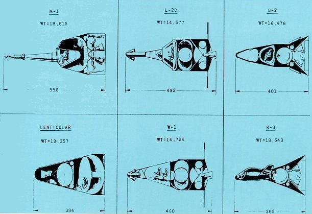
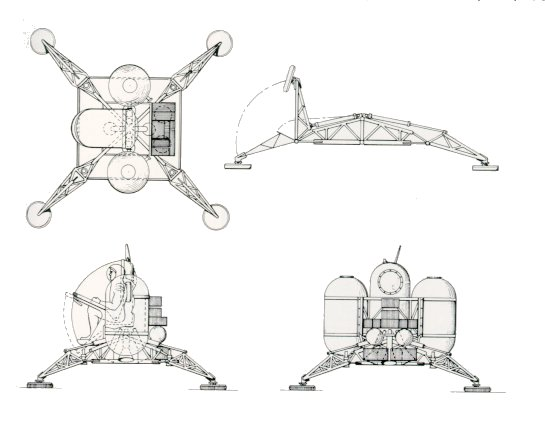
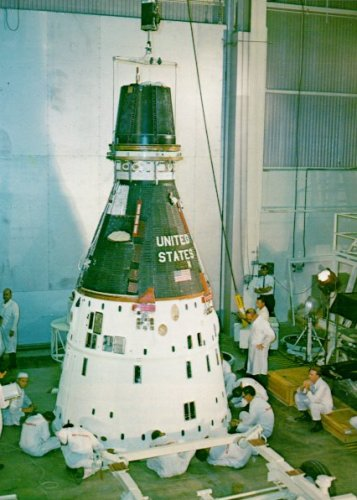
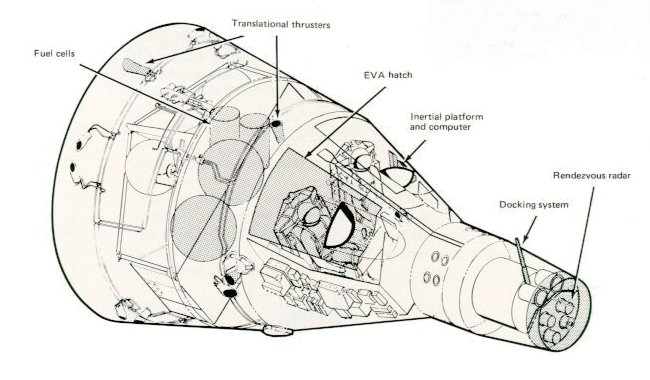

|  |
| Early proposals for manned space vehicles varied greatly in configuration and weight. In some, the men within faced one way during launch and another during reentry; in others, the vehicle was turned around, not the seats. Different approaches to the problem of escape from launching disaster were shown in these six industrial proposals. Environmental control, thermal and radiation shielding, and protection against meteorite impact were all unknowns facing early spacecraft designers. |
|  |
| A one-man lunar lander weighing 5000 pounds was envisioned as early as 1961 by a pair of Space Task Group engineers, James A. Chamberlin and James T. Ross, and here drawn by Harry A. Shoaf. It was seen as part of a 35,000-pound payload that might be carried by a post-Mercury spacecraft. The other extreme in early ideas to send men to the Moon called for a direct-ascent manned lunar vehicle weighing some 150,000 pounds. It would have been launched by Nova, a giant booster capable (on paper) of approximately 12 million pounds of thrust. |
|  | This Gemini spacecraft, in preparation in the Pyrotechnical Installation Building at the Cape, was to climb to a record altitude of 853 miles in September 1966. It docked in space with an Agena, and then used the big Agena rocket for the energy needed to reach the larger orbit. Gemini flights provided priceless experience in the tricky business of rendezvousing two craft in space with the minimum expenditure of energy. They also supplied practice at docking and in extravehicular activity, both needed for future Moon voyages. Finally, they helped build up experience with the mission-control system developing on the ground to support manned spaceflight. |
|  |
| The two-man Gemini seemed capacious after tiny Mercury but it was actually very cramped. The astronauts rubbed elbows, and the man in the right seat, returning after EVA with his bulky spacesuit and tether, had to jam himself in to close the hatch over his head. |